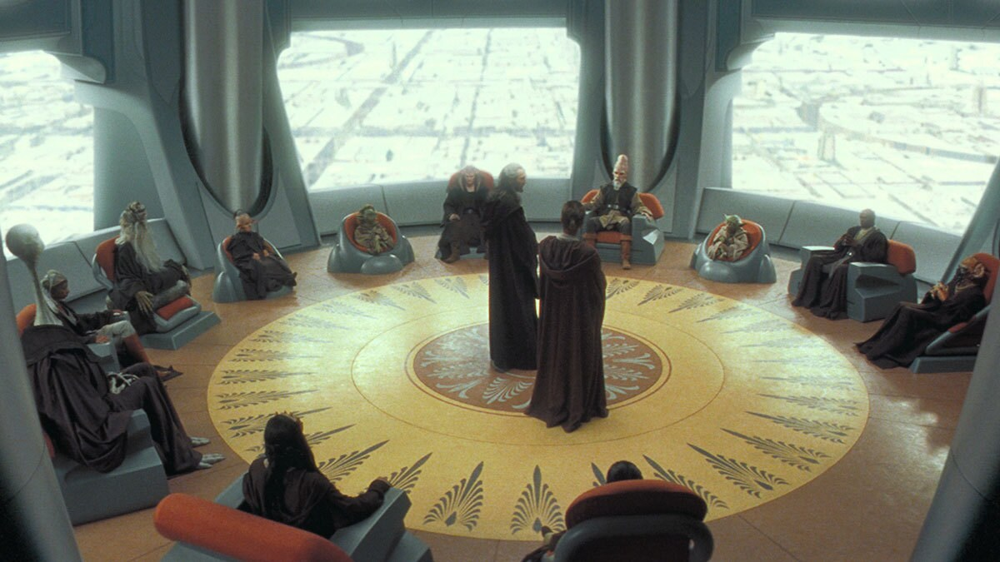
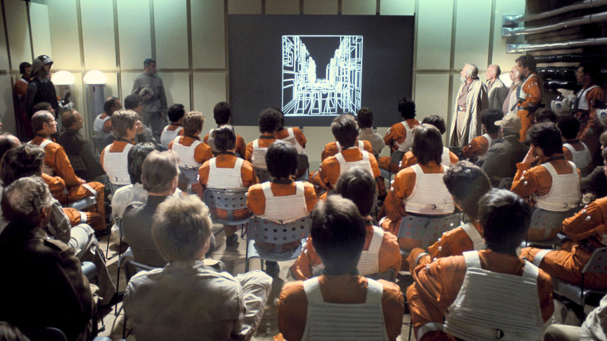
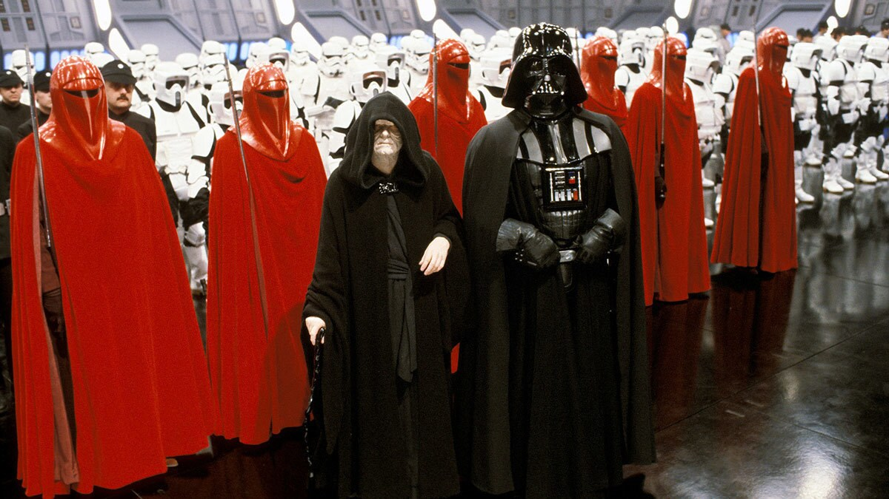
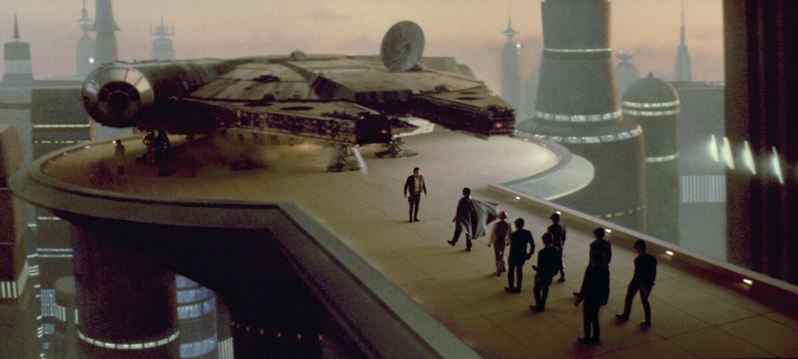

Jedi Order
The Jedi Order served as guardians of peace and justice across the galaxy. Jedi studied the light side of the Force through patience and discipline. They used their abilities to protect others when deemed necessary.

Faction Archive
The Star Wars galaxy is shaped by organizations with different beliefs, goals, and visions for the future.

The Jedi Order served as guardians of peace and justice across the galaxy. Jedi studied the light side of the Force through patience and discipline. They used their abilities to protect others when deemed necessary.
The Sith followed the dark side of the Force and sought power through passion, anger, and control. Their history is shaped by rivalries between master and apprentice.

The Rebel Alliance was a collection of freedom fighters who opposed the Galactic Empire. Its members came from many worlds and fought to restore freedom to the galaxy.

The Galactic Empire ruled through military strength, fear, and strict control. It replaced the Galactic Republic and attempted to eliminate all opposition.

Not everyone in the galaxy belonged to a major faction. Smugglers, bounty hunters, explorers, and mercenaries often followed their own goals and personal codes.